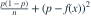
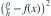
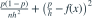
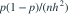

固定区间 B 的宽度为 h，真实概率为  。n 个独立样本落入 B 的个数为 N。在该区间内用
。n 个独立样本落入 B 的个数为 N。在该区间内用  估计
估计  。其均方误差为？
。其均方误差为？
。n 个独立样本落入 B 的个数为 N。在该区间内用 估计 。其均方误差为？- A

- B
- C

- D

我已思考，展开答案与解析
正确答案：D
- ，故估计期望为 、方差为

。 - 用“方差加偏差平方”分解均方误差即得结果。
易错提醒直方图高度是频率除以组距；区间平均密度不一定等于点处真实密度。
JYSG · 432精选 · 册内北京师范大学432·2025年·1(2)；PDF第63页（印刷页61）
原大题拆解